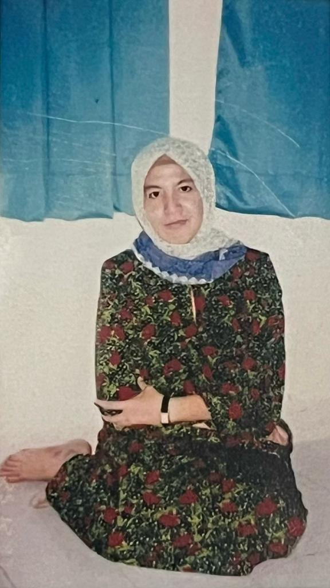
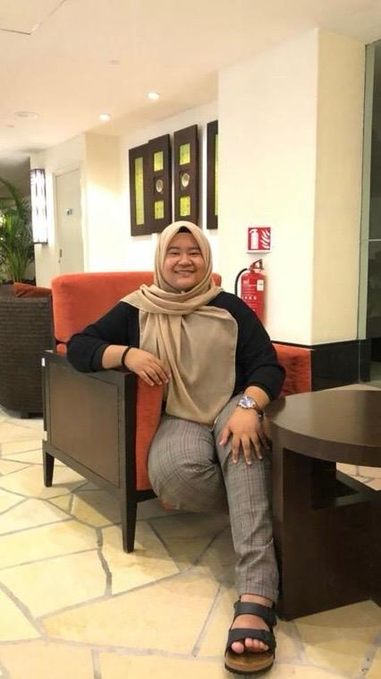

My Family Members"In the heart of our small family, my mom is the strong backbone, supported by the loving care of my late grandmother and aunties, who played vital roles in raising me. My childhood was shaped by my grandmother's wisdom and my aunts' nurturing presence. My mom, with her unwavering commitment, emerged as the cornerstone, balancing the responsibilities of parenthood. Throughout this journey, my cousin became a constant companion, and together, we navigated life's highs and lows, building a friendship that goes beyond the typical cousin relationship. I am grateful for the interconnected relationships that shaped me. Our small but mighty family is a sanctuary of love, understanding, and enduring connections."

Marfuzah Md Isa Mohamad Arif Nasuha Md Noor

Nabila Md Noor Izni Md Nasir Izz Mirza Md Nasir |